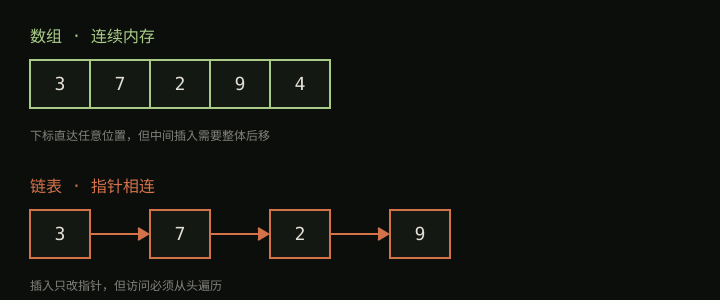

链表与数组之争
你居然能发现这里，嘻嘻嘻！下面的文章只是一个配图、和代码块的写法的Test，试试看
数组和链表是最基础的两种线性结构，它们的区别可以用一张图说清楚：

数组：住在连续的房间里
数组的所有元素在内存里紧挨着。好处是定位快——知道第一个房间在哪，第 100 个房间的位置一步就能算出来。代价是插入慢：想在中间插一个人，后面所有人都得搬家。
链表：每个人手里有下一个人的地址
链表的元素散落在内存各处，靠指针串起来。插入的时候只要改两根指针，谁都不用搬家。代价是找人慢：想找第 100 个节点，必须从头一个一个问过去。
用代码表示一个最简单的链表节点：
class Node:
def __init__(self, value):
self.value = value
self.next = None # 指向下一个节点
我的判断
| 操作 | 数组 | 链表 |
|---|---|---|
| 按位置访问 | O(1) | O(n) |
| 中间插入/删除 | O(n) | O(1)* |
| 内存布局 | 连续，缓存友好 | 分散 |
*前提是已经拿到了插入位置的指针。
实际工程里数组（和它的变体）出场率远高于链表——因为现代 CPU 的缓存机制太偏爱连续内存了。链表的价值更多在于它的思想：用指针把分散的东西组织起来，这个思想通向树和图。